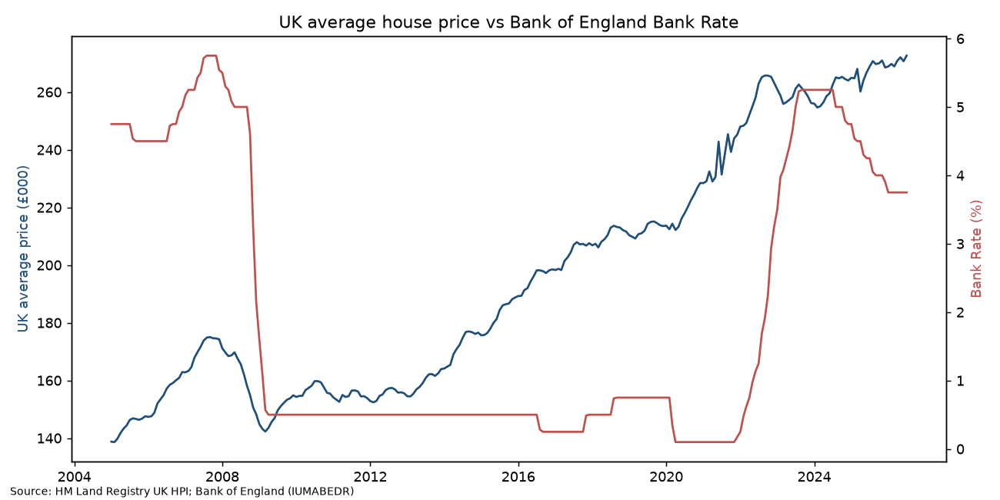
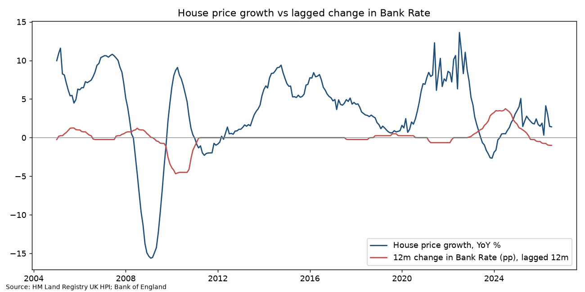

Overview
merged monthly UK average price with Bank Rate; computed year-on-year price growth and 12-month change in Bank Rate; cross-correlations at 0–24 month lags; OLS of price growth on the 12-month-lagged rate change with Newey-West (HAC) standard errors.
Context & question
How closely do UK house prices respond to Bank of England rate changes, and with what lag?
Methodology & process
- Downloaded the HM Land Registry UK HPI full file and the Bank of England monthly average Bank Rate (IUMABEDR) with
download_data.sh. - Filtered the HPI to the United Kingdom series and merged it with Bank Rate by month (Jan 2005 – Jul 2026).
- Computed year-on-year house price growth and the 12-month change in Bank Rate.
- Measured cross-correlations at 0, 6, 12, 18 and 24-month lags.
- Estimated an OLS regression of price growth on the 12-month-lagged rate change with Newey-West (HAC) standard errors.
- Examined the 2021–23 tightening episode and annual sales volumes; produced charts with matplotlib.
Data & tools
HM Land Registry UK House Price Index full file (July 2026 release); Bank of England series IUMABEDR (monthly average Bank Rate). The 35 MB raw HPI file is git-ignored; the cleaned merged series is in data/uk_hpi_bankrate_clean.csv.
Findings & outcomes
- UK average price rose from £138,759 to £272,611 (+96.5% nominal); July 2026 is the series peak.
- YoY growth ranged from −15.6% (Feb 2009) to +13.6% (Jul 2022).
- Same-month correlation between price growth and rate changes is positive (0.48): the Bank raises rates when the economy and housing are running hot, so naive correlation misleads.
- At a 12-month lag the relationship turns negative (−0.24). OLS: a 1pp rise in Bank Rate is associated with 0.90pp lower house price growth a year later (p = 0.002), but R² = 0.05: rates alone explain little of price growth.
- During the 2021–23 tightening (avg Bank Rate 0.17% → 5.23%), recorded UK sales volumes fell 25.5% from 2022 to 2023 (1,045,618 → 779,338; recent months subject to revision): the volume adjustment was far larger than the price adjustment.


Limitations: bivariate model, no controls for income, supply or credit conditions; nominal prices.
Why it matters
Interest-rate sensitivity of asset prices matters for lenders, housebuilders, investors and policy teams; this shows why naive correlations mislead and how lag structure changes the conclusion.
Skills gained
Code & data
analysis.py · download_data.sh · results.txt · data/uk_hpi_bankrate_clean.csv · README.md